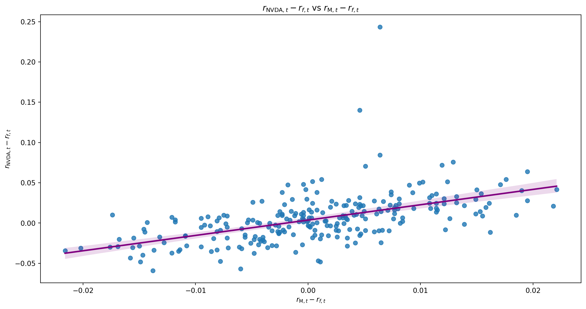
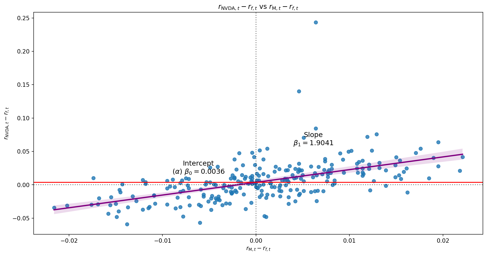
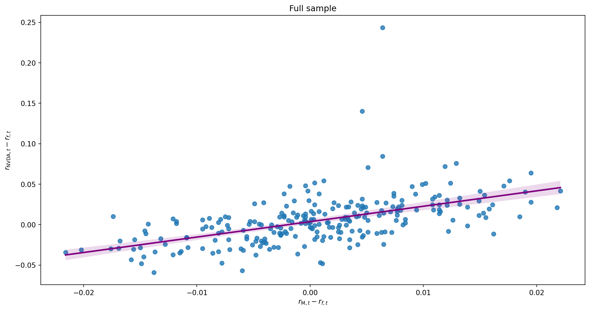
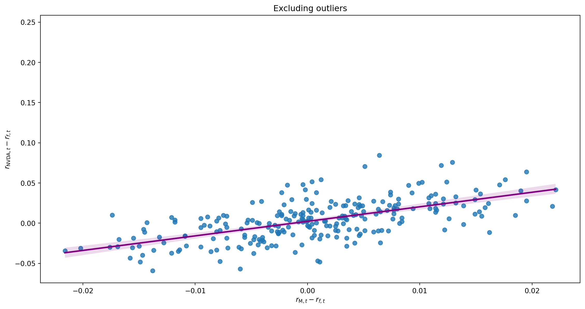
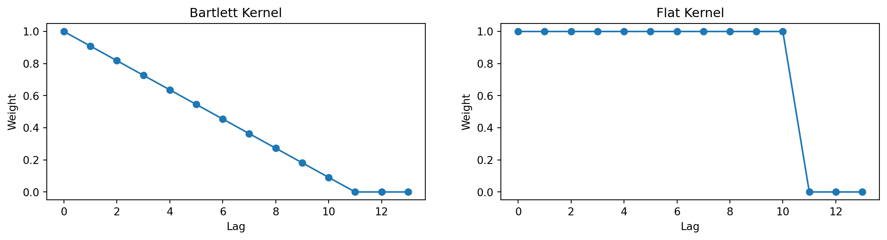

| exret | mktrf | smb | hml | |
|---|---|---|---|---|
| date | ||||
| 2023-01-03 | -0.020630 | -0.0048 | 0.0008 | -0.0012 |
| 2023-01-04 | 0.030148 | 0.0081 | 0.0054 | 0.0005 |
| 2023-01-05 | -0.032986 | -0.0114 | -0.0018 | 0.0122 |
| 2023-01-06 | 0.041470 | 0.0221 | -0.0006 | 0.0005 |
| 2023-01-09 | 0.051583 | 0.0004 | 0.0054 | -0.0124 |
| 2023-01-10 | 0.017811 | 0.0080 | 0.0091 | -0.0056 |
| 2023-01-11 | 0.005613 | 0.0126 | 0.0017 | -0.0082 |
| 2023-01-12 | 0.031703 | 0.0046 | 0.0145 | -0.0030 |
| 2023-01-13 | 0.023329 | 0.0046 | 0.0028 | -0.0029 |
| 2023-01-17 | 0.047348 | -0.0018 | 0.0017 | -0.0052 |
MATH60230 - Lecture 7
Outline
- Linear Regression
- Review of Linear Regression
- Robust Standard Errors
- Measurement Errors
- Dummy Variables
- Numpy
Linear Regression
We write Linear Regressions as
y_{t}=X_{t}\beta+\varepsilon_{t}
where \varepsilon_{t} is an error term and E\left( \varepsilon_{t}\right) =0, X_t is a vector of random variables, and \beta is a vector of coefficients. If there is an intercept (\alpha), then the first variable in X_t is a constant equal to one and the first coefficient in \beta is \alpha.
- We select \beta to minimize
\begin{aligned} E\left[ \left( y_{t}-X_{t}\beta\right) ^{2}\right] &= E\left[ \varepsilon_{t}^{2}\right] \\ \Rightarrow \frac{d}{d\beta} E\left[ \left( y_{t}-X_{t}\beta\right) ^{2}\right] &= 0 \end{aligned}
- The \beta^{*} that solves this problem is \beta^{*} = E\left[ X_t^{\prime}X_t\right]^{-1}\cdot E\left[ X_t^{\prime}y_t \right]
Linear Regression
WLLN
T^{-1}\sum_{t=1}^{T}X_{t}^{\prime}y_{t}\rightarrow E\left( X_{t}^{\prime}y_{t}\right) \text{ and }T^{-1}\sum_{t=1}^{T}X_{t}^{\prime}X_{t}\rightarrow E\left[ X_{t}^{\prime}X_{t}\right]
In practice, we replace E\left( X_{t}^{\prime}X_{t}\right) and E\left( X_{t}^{\prime}y_{t}\right) with their finite-sample estimates
\widehat{\beta}=\left( \frac{1}{T}\sum_{t=1}^{T}X_{t}^{\prime}X_{t}\right)^{-1}\left( \frac{1}{T}\sum_{t=1}^{T}X_{t}^{\prime}y_{t}\right) =\left( X^{\prime}X\right) ^{-1}\left( X^{\prime}y\right)
where X is the T\times K matrix whose tth row is X_{t} and y is the vector whose tth element is y_{t}.
Linear Regression
X = \left[\begin{array}{cccccc} 1 & x_{1, 1} & x_{2, 1} & \cdots & x_{K-2, 1} & x_{K-1, 1} \\ 1 & x_{1, 2} & x_{2, 2} & \cdots & x_{K-2, 2} & x_{K-1, 2} \\ \vdots & \vdots & \vdots & \ddots & \vdots & \vdots \\ 1 & x_{1, T-1} & x_{2, T-1} & \cdots & x_{K-2, T-1} & x_{K-1, T-1} \\ 1 & x_{1, T} & x_{2, T} & \cdots & x_{K-2, T} & x_{K-1, T} \end{array} \right]
y = \left[\begin{array}{c}y_1\\ y_2\\ \vdots\\ y_{T-1}\\ y_T \end{array} \right], \quad \beta = \left[\begin{array}{c}\alpha \\ \beta_1 \\ \beta_2 \\ \vdots \\ \beta_{K-2} \\ \beta_{K-1} \end{array} \right]
Example
Regressing NVDA on Fama and French (1995) 3 factors
r_{\text{NVDA},t}-r_{f,t} = \alpha + \beta_1(r_{\text{M},t}-r_{f,t}) + \beta_2SMB_t + \beta_3HML_t + \beta_4MOM_t + \varepsilon_t
Univariate Regression
| Dep. Variable: | exret | R-squared: | 0.290 |
|---|---|---|---|
| Model: | OLS | Adj. R-squared: | 0.287 |
| Method: | Least Squares | F-statistic: | 101.1 |
| Date: | Sun, 25 Jan 2026 | Prob (F-statistic): | 3.65e-20 |
| Time: | 15:31:34 | Log-Likelihood: | 560.91 |
| No. Observations: | 250 | AIC: | -1118. |
| Df Residuals: | 248 | BIC: | -1111. |
| Df Model: | 1 | ||
| Covariance Type: | nonrobust |
| coef | std err | t | P>|t| | [0.025 | 0.975] | |
|---|---|---|---|---|---|---|
| Intercept | 0.0036 | 0.002 | 2.230 | 0.027 | 0.000 | 0.007 |
| mktrf | 1.9041 | 0.189 | 10.052 | 0.000 | 1.531 | 2.277 |
| Omnibus: | 224.272 | Durbin-Watson: | 2.030 |
|---|---|---|---|
| Prob(Omnibus): | 0.000 | Jarque-Bera (JB): | 7220.673 |
| Skew: | 3.332 | Prob(JB): | 0.00 |
| Kurtosis: | 28.471 | Cond. No. | 116. |
Notes:
[1] Standard Errors assume that the covariance matrix of the errors is correctly specified.
Univariate Regression

Univariate Regression

Residuals

Impact of Outliers

Impact of Outliers

Multivariate Regression
| Dep. Variable: | exret | R-squared: | 0.382 |
|---|---|---|---|
| Model: | OLS | Adj. R-squared: | 0.374 |
| Method: | Least Squares | F-statistic: | 50.61 |
| Date: | Sun, 25 Jan 2026 | Prob (F-statistic): | 1.63e-25 |
| Time: | 15:31:36 | Log-Likelihood: | 578.28 |
| No. Observations: | 250 | AIC: | -1149. |
| Df Residuals: | 246 | BIC: | -1134. |
| Df Model: | 3 | ||
| Covariance Type: | nonrobust |
| coef | std err | t | P>|t| | [0.025 | 0.975] | |
|---|---|---|---|---|---|---|
| Intercept | 0.0031 | 0.002 | 2.020 | 0.044 | 7.73e-05 | 0.006 |
| mktrf | 2.0029 | 0.192 | 10.436 | 0.000 | 1.625 | 2.381 |
| smb | -0.5142 | 0.249 | -2.069 | 0.040 | -1.004 | -0.025 |
| hml | -1.0495 | 0.206 | -5.091 | 0.000 | -1.456 | -0.644 |
| Omnibus: | 223.511 | Durbin-Watson: | 2.103 |
|---|---|---|---|
| Prob(Omnibus): | 0.000 | Jarque-Bera (JB): | 7528.349 |
| Skew: | 3.293 | Prob(JB): | 0.00 |
| Kurtosis: | 29.064 | Cond. No. | 180. |
Notes:
[1] Standard Errors assume that the covariance matrix of the errors is correctly specified.
Linear Regression
\widehat{\beta} is the Ordinary Least Squares (OLS) estimate of \beta
OLS estimators minimize the variance of the residuals \widehat{\varepsilon}_{t}=y_{t}-X_{t}\widehat{\beta}
This does not imply that \widehat{\beta} is always the best estimator of \beta
The Gauss-Markov Theorem: Under some conditions
- \widehat{\beta} is the Best Linear Unbiased Estimator of \beta
\Rightarrow OLS is BLUE
To know when to use OLS, you need to know when the Gauss-Markov Theorem applies!
The Gauss-Markov Theorem
E\left[ \varepsilon|X\right] =0 (Orthogonality)
- \beta captures all the systematic effect of X on y
\Rightarrow the residuals contain no pertinent information on X - This allows us to identify \beta and distinguish its effect from that of \varepsilon
- All estimators that we study require a similar condition for identification
- \beta captures all the systematic effect of X on y
E\left[ X^{\prime}y\right] and E\left[ X^{\prime}X\right] exist
- May not be true for distributions with fat enough tails! (t\left( 1\right))
- E\left[ X^{\prime}X\right]: non-stationary X?
E\left[ X^{\prime}X\right] ^{-1} exists.
- X^{\prime}X must be full-rank
- otherwise individual elements of \beta may not be identified
- Errors \varepsilon are homoskedastic: \forall t, s\quad E[\varepsilon^2_t] = E[\varepsilon^2_s]
The Gauss-Markov Theorem
If these conditions are satisfied, the Gauss-Markov Theorem proves that \widehat{\beta} is the best unbiased estimator of \beta that is linear in \varepsilon
\begin{aligned} \widehat{\beta} &=\left( X^{\prime}X\right) ^{-1}X^{\prime}y\\ &= \left( X^{\prime}X\right) ^{-1}X^{\prime}\left( X\beta+\varepsilon \right)\\ &=\beta+\left( X^{\prime}X\right) ^{-1}X^{\prime}\varepsilon \end{aligned}
If \varepsilon is not homoskedastic, \widehat{\beta} is still unbiased, but has higher variance.
- This means that \widehat{\beta} has the lowest variance of all unbiased estimators of the form
\widehat{\beta}=\beta+w^{\prime}\varepsilon
This also implies that \omega^{\prime}\widehat{\beta} is the BLUE of \omega^{\prime}\beta
Understanding Multiple Regression
Interpreting \beta_{i} This is the effect of X_{i} on y ceteris paribus (holding everything else constant)
In the case where X_{i} is correlated with other regressors (e.g. X_{j}), this does not take account of the indirect effect of X_{i} on y via X_{j}
Interpreting \widehat{\beta}_{i} Understand an alternative way to estimate \widehat{\beta}_{i}
Regress y on all the other variables X_{j}\neq X_{i} and save the residuals \widehat{\varepsilon}_{y}.
Regress X_{i} on all the other variables X_{j}\neq X_{i} and save the residuals \widehat{\varepsilon}_{x}.
\widehat{\beta}_{i} is the coefficient of the regression of \widehat{\varepsilon}_{y} on \widehat{\varepsilon}_{x}
This shows that \widehat{\beta}_{i} captures the effect of X_{i} on y that cannot be accounted for by any other variables X_{j}.
The Variance of OLS Estimates
How reliable are OLS estimates? \begin{aligned} E\left( \widehat{\beta}\right) &=\beta+E\left( \left( X^{\prime}X\right) ^{-1}X^{\prime}\varepsilon\right) =\beta\\ Var\left( \widehat{\beta}\right) &=Var\left( \left( X^{\prime}X\right) ^{-1}X^{\prime}\varepsilon\right) =\sigma_{\varepsilon}^{2}\cdot\left( X^{\prime}X\right) ^{-1} \end{aligned}
- If X is stochastic, these formulas give the mean and the variance of \widehat{\beta} conditional on X.
What are the implications of
- a change in the scale (e.g. units of measure) of X?
- the dispersion of X?
To estimate \sigma_{\varepsilon}^{2}: \quad\widehat{\sigma}_{\varepsilon}^{2}=\frac{\widehat{\varepsilon}^{\prime}\widehat{\varepsilon}}{T-K}=\frac{1}{T-K}\sum_{t=1}^{T}\widehat{\varepsilon}_{t}^{2}=\frac{1}{T-K}\sum_{t=1}^{T}\left( y_{t}-X_{t}\widehat{\beta}\right)^{2}
Inference on OLS Estimates
If \varepsilon_{t}\sim N\left( 0,\sigma_{\varepsilon}^{2}\right) i.i.d, then \widehat{\beta}\sim N\left(\beta,\sigma_{\varepsilon}^{2}\left( X^{\prime}X\right)^{-1}\right)
If \varepsilon_{t} isn’t Gaussian but is still i.i.d\left( 0,\sigma_{\varepsilon}^{2}\right), \text{CLT} \Rightarrow \widehat{\beta}\rightarrow N\left(\beta,\sigma_{\varepsilon}^{2}\left(X^{\prime}X\right)^{-1}\right) \text{ as } T\rightarrow\infty
The diagonal elements of \sigma_{\varepsilon}^{2}\left( X^{\prime}X\right)^{-1} give the variance of the elements of \widehat{\beta}.
To test H_{0}:\beta_{i}=\beta_{0,i} where \beta_{i} is the ith element of \beta, we can use the Student t-test \widehat{z}\equiv\left( \widehat{\beta}_{i}-\beta_{0,i}\right) / \sqrt{\left[ \widehat{\sigma}_{\varepsilon}^{2}\left( X^{\prime}X\right)^{-1}\right] _{\left[ i,i\right] }}\sim t\left( T-K\right)
T\rightarrow\infty\Rightarrow t\left( T-K\right) \rightarrow N\left( 0,1\right)
Inference on OLS Estimates
Suppose instead we want to test several coefficient restrictions jointly?
- H_{0}:R\cdot\beta=b where R is a q\times K matrix and b is a q\times1 vector
If \widehat{\beta}\sim N\left(\beta,\Sigma\right) where \Sigma \equiv\sigma_{\varepsilon}^{2}\left( X^{\prime}X\right)^{-1}
\Rightarrow\left(R\cdot\widehat{\beta}-b\right) \sim N\left(0, R^{\prime}\cdot\Sigma\cdot R\right) under H_{0}
\Rightarrow \mathcal{F} \equiv\left( R\cdot\widehat{\beta}-b\right) ^{\prime}\cdot\left[ R\cdot\Sigma\cdot R^{\prime}\right]^{-1}\cdot\left( R\cdot\widehat{\beta}-b\right) \cdot q^{-1} \sim F\left(q, T-K\right) under H_{0} where q is the number of restrictions (rank of R) and K is the number of estimated parameters (# elements of \beta)
Note that \mathcal{F} =\frac{SSR_{R}-SSR_{U}}{SSR_{U}}\cdot\frac{T-K}{q}
where
SSR_{i}\equiv\widehat{\varepsilon}_{i}^{\prime}\cdot \widehat{\varepsilon}_{i}
\begin{aligned}
i&=U\Rightarrow \text{unrestricted regression}\\
i&=R\Rightarrow \text{restricted regression}
\end{aligned}
Default F-test
y = \alpha + \beta_1 x_1 + \beta_2 x_2 + \beta_3 x_3 + \varepsilon = [1\ x_1\ x_2\ x_3] [\alpha\ \beta_1\ \beta_2\ \beta_3\ ]^{\prime}
- The F-test is a test of the joint significance of a group of variables
- “Default” H_0 is that all \beta s coefficients are zero:
H_{0}:R\cdot\beta=b \Rightarrow \underbrace{\left[\begin{array}{cccc}0 & 1 & 0 & 0\\0 & 0 & 1 & 0\\0 & 0 & 0 & 1\\ \end{array} \right]}_{R} \left[\begin{array}{c}\alpha \\ \beta_1 \\ \beta_2 \\ \beta_3 \end{array} \right] = \underbrace{\left[\begin{array}{c}0 \\ 0 \\ 0 \end{array} \right]}_{b}
Understanding F-test
y = \alpha + \beta_1 x_1 + \beta_2 x_2 + \beta_3 x_3 + \varepsilon = [1\ x_1\ x_2\ x_3] [\alpha\ \beta_1\ \beta_2\ \beta_3\ ]^{\prime}
- More generally, H_0 can be any linear combination of the coefficients
- Suppose we want to test H_0: \beta_1 - \beta_2 = 2\beta_3 \text{ and } \beta_1 - 1 = \beta_2 \text{ and } \alpha = 0
To find R and b, we can write the restrictions as:
\begin{aligned} \beta_1 - \beta_2 - 2\beta_3 &= 0\\ \beta_1 - \beta_2 &= 1\\ \alpha &= 0 \end{aligned}
H_{0}:R\cdot\beta=b \Rightarrow \underbrace{\left[\begin{array}{cccc}0 & 1 & -1 & -2\\0 & 1 & -1 & 0\\1 & 0 & 0 & 0\\ \end{array} \right]}_{R} \left[\begin{array}{c}\alpha \\ \beta_1 \\ \beta_2 \\ \beta_3 \end{array} \right] = \underbrace{\left[\begin{array}{c}0 \\ 1 \\ 0 \end{array} \right]}_{b}
Robust Standard Errors
Problem
How do we test hypotheses when errors are not independent?
So far, we’ve only talked about inference when errors are i.i.d.
- What if errors are not white noise?
- What if errors are heteroscedastic?
The modern approach is based on two methods introduced in the 1980s.
Both of these are nonparametric corrections: they do not require us to specify an exact form of the heteroscedasticity (or autocorrelation.)
They are very, very widely used, esp. in Finance.
- Lars Peter Hansen won the Nobel Prize in 2013 for the theory behind HAC inference.
Robust Standard Errors
Consider the case of
y_{t} =X_{t}\cdot\beta+e_{t}
E\left( e_{t}|X_{t}\right) =0
where e_{t} may suffer from one or both of the above problems.
Let’s further suppose that we estimate \widehat{\beta} by OLS.
Normally, we would use
\operatorname{Cov}\left( \widehat{\beta}\right)_{OLS}=\widehat{\sigma}_{e}^{2}\cdot\left( X^{\prime}X\right)^{-1}
Robust Standard Errors
White Standard Errors
Replace \operatorname{Cov}( \widehat{\beta})_{OLS} with
\operatorname{Cov}\left( \widehat{\beta}\right)_{HC}=\left( X^{\prime}X\right)^{-1}\cdot\left[ X^{\prime}\cdot\operatorname*{diag}\left( \widehat{e}_{t}^{2}\right) \cdot X\right] \cdot\left( X^{\prime}X\right)^{-1}
This gives an estimate of \operatorname{Cov}( \widehat{\beta})_{OLS} that is robust to heteroscedasticity.
Note that:
- X is T\times K
- \operatorname*{diag}\left( \widehat{e}_{t}^{2}\right) is a T\times T matrix with zeros everywhere except the main diagonal, which has a typical element \widehat{e}_{j}^{2} in row j, column j
- Equation (2.49) in Tsay adjusts this by \frac{T}{T-K} for better finite-sample performance. (Warning: Tsay’s X_{t}^{\prime}= my X_{t})
- White refers to Prof. Hal White of UCSD, who first proposed it (see White 1980)
Robust Standard Errors
HAC Standard Errors
Replace \left[ X^{\prime}\cdot\operatorname*{diag}( \widehat{e}_{t}^{2}) \cdot X\right] in \operatorname{Cov}( \widehat{\beta})_{HC}
with \left[ X^{\prime}\cdot\operatorname*{diag}\left( \widehat{e}_{t}^{2}\right) \cdot X\right] + \sum_{j=1}^{l}\omega\left( j\right) \cdot\sum_{t=j+1}^{T}\left(X_{t}\widehat{e}_{t}\widehat{e}_{t-j}X_{t-j}^{\prime}+X_{t-j}\widehat{e}_{t-j}\widehat{e}_{t}X_{t}^{\prime}\right) where
- X_{t} is a K\times1 vector, so X_{t}\widehat{e}_{t}\widehat{e}_{t-j}X_{t-j}^{\prime}=\left( \widehat{e}_{t}\widehat{e}_{t-j}\right) \cdot X_{t}X_{t-j}^{\prime} is K\times K
- l is called a truncation lag (or a bandwidth)
- \omega\left( j\right) is a weighting function (or kernel) such that \omega\left( 0\right) =1, \omega\left( j\right) =\omega\left( -j\right) and \omega\left( j\right) \rightarrow 0 as \left\vert j\right\vert \rightarrow l
This gives an estimate of \operatorname{Cov}( \widehat{\beta})_{OLS} that is Heteroscedasticity and AutoCorrelation Robust.
Robust Standard Errors
HAC Standard Errors require us to choose both l and \omega\left( j\right) and the choice could affect our results.
- Choices for l are almost always ad hoc and ensure that l is a small fraction of T.
- Good practice is to verify that using 0.5l and 2l doesn’t change your conclusions.
- If seasonal effects could be causing autocorrelations, another rule of thumb is to ensure that l\geq2f where f\equiv the number of periods per seasonal cycle (e.g. f=4 for quarterly data, f=5 or 7 for daily data with weekly patterns, etc.)
- There are known serious problems with HAC Standard Errors in some (rare) cases with strongly negatively autocorrelated errors.
Robust Standard Errors
There are many popular choices for \omega\left( j\right)
Flat \omega\left( j\right) =1\left( j\leq l\right): Due to Hansen and Hodrick (1980). Popular correction for overlapping forecast errors. Choose l=h-1; \operatorname{Cov} ( \widehat{\beta})_{HAC} might not be PSD
Bartlett \omega\left( j\right) =1-\frac{j}{l+1}: Due to Newey and West (1987). The most popular general-purpose choice \Longrightarrow \operatorname{Cov}( \widehat{\beta})_{HAC} always PSD

Measurement Errors
Suppose that the “true” model is y_{t}=X_{t}\cdot\beta+\varepsilon_{t} \qquad\text{where}\qquad E\left( X_{t}\cdot\varepsilon_{t}\right) =0
We observe y_{t}, but X_{t} we only observe with error
- Instead of the true X_{t}, we have \widetilde{X}_{t}=X_{t}+u_{t}
If the measurement errors are “noise” in the sense that
E\left[ X_{t}\cdot u_{t}\right] =E\left[ \varepsilon_{t}\cdot u_{t}\right] =0
\widetilde{X}_{t}=X_{t}+u_{t} \Rightarrow E\left[ \widetilde{X}_{t}\cdot u_{t}\right] \neq 0
This is typically called a Measurement Error problem.
Measurement Errors
- What if we now regress y_{t} on \widetilde{X}_{t}?
\begin{aligned} y_{t} &=\widetilde{X}_{t}\cdot\beta+e_{t}\\ &= X_{t}\cdot\beta+u_{t}\cdot\beta+e_{t}\\ &= X_{t}\cdot\beta+\varepsilon_{t} \end{aligned}
So obviously, e_{t}=\varepsilon_{t}-\beta\cdot u_{t}
- So E\left[\widetilde{X}_{t}\cdot e_{t}\right] =E\left[\widetilde{X}_{t}\cdot\left(\varepsilon_{t}-\beta\cdot u_{t}\right)\right] = -\beta\cdot E\left[\widetilde{X}_{t}\cdot u_{t}\right] \neq 0
\Rightarrow e_{t} violates one of the Gauss-Markov Theorem’s conditions for the regression y_{t}=\widetilde{X}_{t}\beta+e_{t}
Measurement Errors
- \Rightarrow \widehat{\beta}=\left( \widetilde{X}^{\prime}\widetilde{X}\right)^{-1}\widetilde{X}\cdot y will be biased
E\left( \widehat{\beta}\right) =\beta\frac{\sigma_{X}^{2}}{\sigma_{X}^{2}+\sigma_{u}^{2}}
\Rightarrow \widehat{\beta} typically underestimates \beta
Measurement Errors
Suppose we regress stock returns on estimated stock betas \widehat{\beta}_{i}^{\prime}s
- The \widehat{\beta}_{i}^{\prime}s contain some estimation error
- We should therefore expect that the OLS coefficients from the regression will tend to be smaller than what the “true” \beta’s would give.
- The less precise our estimator, the bigger the downward bias.
What to do?
- Get more accurate estimates of \beta to reduce the bias.
- Find “valid instruments”; Z_{t} such that
E\left( Z^{\prime}\widetilde{X}\right) \neq 0\text{ and }E\left( Z^{\prime}e_{t}\right) =0
and estimate using IV Two-Stage Least Squares
- Use Generalized Method of Moments (GMM)
Dummy Variables
Definition: A dummy variable is a binary variable that we include as an independent (RHS) variable in a regression.
i.e. D_{t}\equiv1\left( Z_{t}\right) and we model y_{t}=\begin{bmatrix} X_{t} & D_{t} \end{bmatrix} \cdot\overrightarrow{\beta}+\varepsilon_{t}
Many common uses:
- Temporal Effects: D_{t}=1\left( t<t^{\ast}\right) or D_{t}=1\left( t\in\left\{ \text{January}\right\}\right)
- Events: D_{t}=1\left( t\in\left\{ \text{Dividends cut}\right\}\right) or D_{t}=1\left( t\in\left\{ r_{t}<\text{VaR}_{5\%}\right\}\right)
- Characteristics: D_{i}=1\left( i\in\left\{ \text{Male}\right\}\right) or D_{i}=1\left( i\in\left\{ \text{cross-listed}\right\}\right)
Testing H_{0}:\beta_{D}=0 tests for change in the conditional mean of y. However, frequently we want to test for changes in \beta.
- Test \beta_{D}=0 in
y_{t}=X_{t}\cdot\beta_X+ D_{t}\cdot\beta_D+ \left( X_{t}\cdot D_{t}\right) \cdot\beta_{XD}+\varepsilon_{t}
Understanding Dummy Variables
Let
- r_{TSX,t} be the return on the Toronto Stock Exchange
- \mathcal{1}_{FOMC,t} be a dummy variable that is 1 on days with Federal Open Market Committee announcements and 0 on other days.
If we estimate
r_{TSX,t} = \alpha + \gamma \mathcal{1}_{FOMC,t} + \varepsilon_t,
we are jointly estimating
\begin{array}{rlll} r_{TSX,t} &= \alpha &+ \varepsilon_t &\text{ on non-FOMC days}, \\ r_{TSX,t} &= (\alpha + \gamma) &+ \varepsilon_t & \text{ on FOMC days}. \end{array}
Thus, \gamma is the change in the average return on FOMC days compared to non-FOMC days.
Understanding Dummy Variables
Let also r_{SP500,t} be the return on the S&P 500.
If we estimate
r_{TSX,t} = \alpha + \gamma \mathcal{1}_{FOMC,t} + \beta_1 r_{SP500,t}+ \beta_{D} r_{SP500,t} \times \mathcal{1}_{FOMC,t} + \varepsilon_t,
we are jointly estimating
\begin{array}{rllll} r_{TSX,t} &= \alpha &+\beta_1 r_{SP500,t} &+ \varepsilon_t &\text{ on non-FOMC days}, \\ r_{TSX,t} &= (\alpha + \gamma) &+ (\beta_1 + \beta_{D}) r_{SP500,t} &+ \varepsilon_t & \text{ on FOMC days}. \end{array}
Thus, \beta_{D} is the change in the sensitivity of TSX returns to S&P 500 returns on FOMC days compared to non-FOMC days.
Dummy Variables
Beginner’s Mistake: Include a constant and a full set of dummy variables in a regression.
- e.g. D_{t}^{1}\equiv1\left( t\in Q1\right);~D_{t}^{2}=1\left( t\in Q2\right),\ldots,D_{t}^{4}=1\left( t\in Q4\right)
Notice that D_{t}^{1}+D_{t}^{2}+D_{t}^{3}+D_{t}^{4}=1\quad\forall t.
\therefore Any X with all 4 dummies and a constant will not be full rank.
\therefore \left( \frac{X^{\prime}X}{T}\right)^{-1} does not exist
Solution: Drop any one of the dummy variables.
- The constant in the regression gives you the effect in the periods where all dummies =0
- The estimated coefficients on the dummies give you the difference between those periods and their periods.
References
Baltagi, Badi H. 2022. Econometrics. 6th ed. Classroom Companion: Economics. Springer Cham. https://doi.org/10.1007/978-3-030-80149-6.
Fama, Eugene F, and Kenneth R French. 1995. “Size and Book-to-Market Factors in Earnings and Returns.” The Journal of Finance 50 (1): 131–55.
Hansen, Lars Peter, and Robert J Hodrick. 1980. “Forward Exchange Rates as Optimal Predictors of Future Spot Rates: An Econometric Analysis.” Journal of Political Economy 88 (5): 829–53. https://www.journals.uchicago.edu/doi/abs/10.1086/260910.
McKinney, Wes. 2022. Python for Data Analysis: Data Wrangling with Pandas, Numpy, and Jupyter. 3rd ed. O’Reilly Media. https://wesmckinney.com/book/.
Newey, Whitney K, and Kenneth D West. 1987. “A Simple, Positive Semi-Definite, Heteroskedasticity and Autocorrelation Consistent Covariance Matrix.” Econometrica 55 (3): 703–8. https://www.jstor.org/stable/1913610.
White, Halbert. 1980. “A Heteroskedasticity-Consistent Covariance Matrix Estimator and a Direct Test for Heteroskedasticity.” Econometrica, 817–38. https://doi.org/10.2307/1912934.

MATH60230